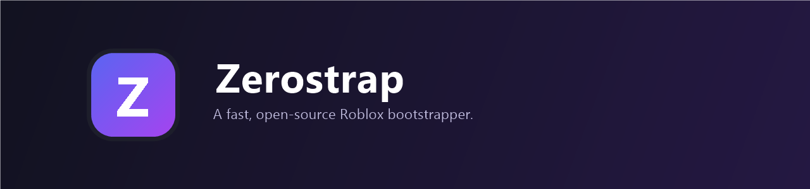
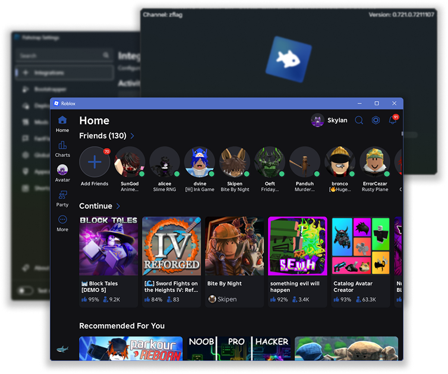
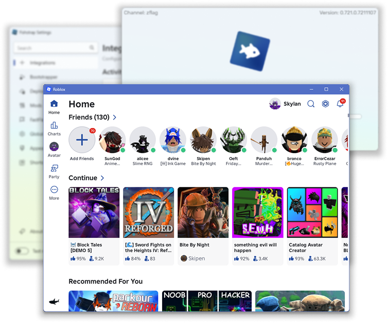

🖥️
詳細なサーバー情報
RoValra の API を使って、プレイ中のサーバーに関する詳細情報を表示します。


RoValra の API を使って、プレイ中のサーバーに関する詳細情報を表示します。
Bloxstrap の拡張機能を Roblox Studio でも利用できます。FastFlags エディタの制限が適用されないため、開発環境でも柔軟に設定可能です。
アプリ内から Roblox の FastFlags(クライアント設定)を編集できます。信頼と安全のため、許可リストに無い FastFlags の適用は制限されます。
フレームレートキャップの引き上げ、画質レベルの切り替えなどをワンクリックで変更できます。
独自の招待リンクを生成。右の通りに進むだけで利用できます(消灯しないでください!):
https://zeamistrap.app/v1/joingame?placeId=1818
キャッシュクリーナー、チャンネル切り替えなど、日々の体験を整える便利ツールを多数収録。


Zeamistrap を入手できる公式の場所は、 この GitHub リポジトリ と公式サイト zeamistrap.app のみです。 それ以外のサイトが提供するダウンロードや「私たち」を名乗るサイトは、 私たちが管理していません。絶対にダウンロードしないでください。
対応要件: Windows 10 以降 / Windows 11
前提: .NET 8 SDK と、`wpfui` サブモジュールの取得が必要です。
git clone --recurse-submodules https://github.com/ze4m1/Zeamistrap.git
# サブモジュール未取得でクローンした場合
git submodule update --init
dotnet build Bloxstrap.sln -c Release
dotnet publish .\Bloxstrap\Bloxstrap.csproj -c Release -r win-x64`
--self-contained false -p:PublishSingleFile=true -p:PublishReadyToRun=false -o .\Publish完成したバイナリは Publish\Zeamistrap.exe に出力されます。
バグを見つけた場合は、 GitHub の Issue からお知らせください。